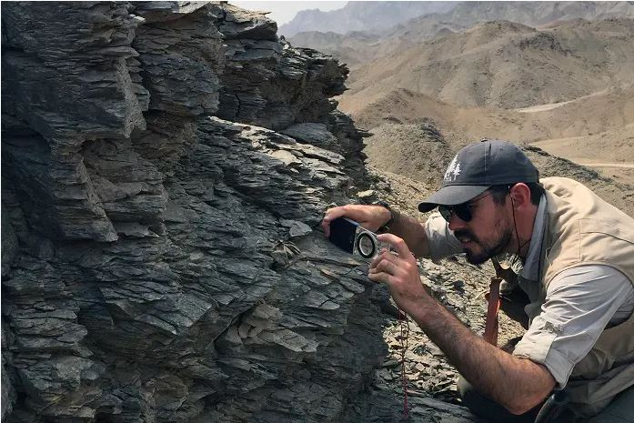
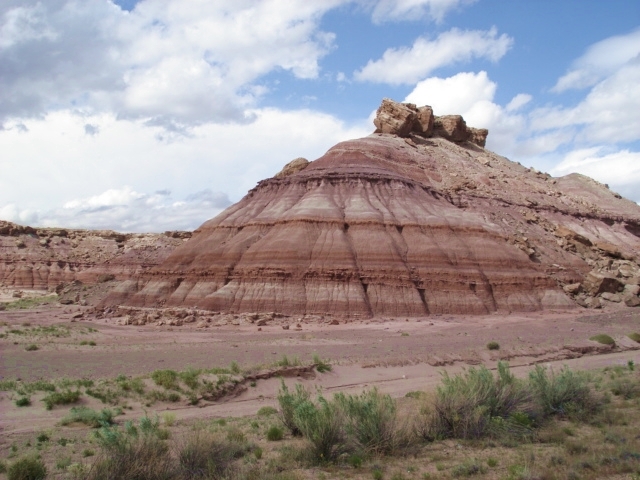

<section class="introduccion">
  <div class="container">
    <h2>Introducción a la Geología</h2>
    <p>La geología es la ciencia que estudia la composición, estructura, historia y procesos que han dado forma a la Tierra. En esta sección, exploraremos los conceptos básicos de la geología y su importancia en nuestra sociedad.</p>
    
    <p>La geología es una disciplina fundamental para comprender la historia de nuestro planeta. Estudia la formación de rocas, minerales, fósiles y la actividad geológica que ha ocurrido a lo largo del tiempo.</p>
    
    <p>Los geólogos también investigan los recursos naturales como los minerales, los combustibles fósiles y el agua subterránea, así como los riesgos geológicos como los terremotos, volcanes y deslizamientos de tierra.</p>
  </div>
</section>
